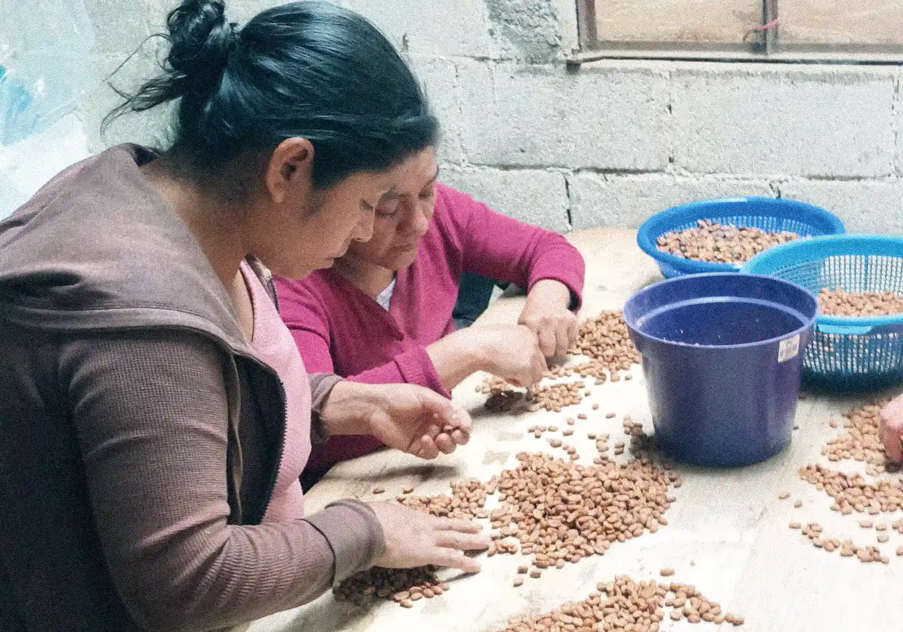

Producido por Jesús Martínez y familia en Finca Los Chuchos, Zongolica, este Sarchimor Honey es cultivado a 1200 m.s.n.m., entregando una taza limpia y expresiva con notas a caramelo, nuez y fruta seca.
Productor/Origen
Jesús Martínez, Veracruz, México
Finca
Finca Los Chuchos
Varietal
Sarchimor
Altitud
900 - 1200 m.s.n.m.
Proceso
Honey, fermentación anaeróbica de 72 horas
Secado
Zarandas bajo sombra
Perfil
Caramelo, Nuez, Fruta Seca
Ubicada en la localidad de Zongolica, Veracruz, Finca Los Chuchos es dirigida por Jesús Martínez y su familia. La finca se caracteriza por su enfoque meticuloso en procesos innovadores. Una fermentación anaeróbica de 72 horas y un cuidadoso secado en camas bajo sombra contribuyen a un perfil definido por la claridad, la estructura y una dulzura vibrante.